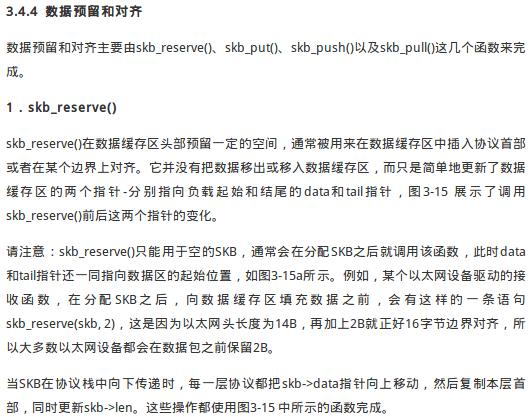
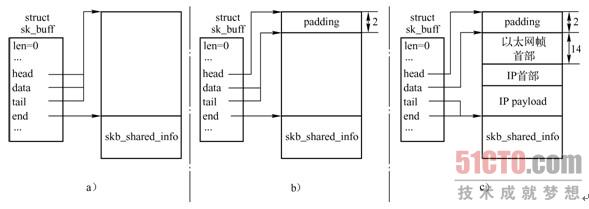
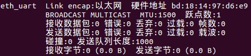

自从接触了Linux以太网驱动以来，我就一直很想能够自己实现一个网卡驱动。我很早就知道，Linux上，驱动开发者只需要实现物理层就好了，上面的其他层都直接使用内核现成的即可。想想当年给IBM做嵌入式，一开始使用GPRS做网络传输，但是GPRS本身不保证网络可靠，于是我用Java模拟TCP/IP写了一套流量控制、超时重发的逻辑，最终还bug百出，以失败告终。当时要是就会网卡驱动的开发，那么会多么方便呀！
后来，我一直想在两线串口上，比如USB-TTL串口上，实现TCP/IP传输。想想很简单，就是把以太帧通过串口发送出去、接收回来。这个想法最近终于实现了！而且我这套实现的通用性很强，几乎与硬件平台无关。我的思路是，整个系统驱动分两部分，一部分是运行在内核态的一个虚拟网卡驱动，另一部分是运行在用户态的转发进程。简单来说，就是当内核需要我的网卡发送某个帧时，我的内核态程序就把这个帧交给用户态程序，用户态程序调用串口发送出去。而当用户态程序通过串口收到一个帧时，则把这个帧交给内核态程序，由内核态程序交给内核。这样的好处是在于，一方面，处于内核态的虚拟网卡与硬件无关；另一方面，处于用户态的转发程序不需要在意串口驱动的实现，可以直接使用现成的串口驱动。于是乎，整个驱动就硬件无关了。
今天这篇要写的就是项目中处于内核态的部分。这一部分重点就是要解决一件事，就是如何搭建用户态进程与内核的桥梁。方法很多，我用的是/proc文件系统，算是我觉得最简单的了。大致流程是这样的：用户态进程读/proc/eth_uart/uio这个虚拟文件，得到一个需要发送出去的帧；用户态进程写/proc/eth_uart/uio，告知驱动程序收到一个帧。每次的交互单位就是一个帧。用户态可以使用阻塞式read()，直到有帧后返回，也可以使用非阻塞式IO轮询，也可以使用poll机制等待可读。
关于/proc的内容可以查看《第一个Linux驱动程序（四）——aMsg使用/proc文件系统》，关于poll机制的内容可以查看《第一个Linux驱动程序（三）——aMsg的非阻塞式IO之select/poll》，关于网卡驱动的内容可以查看《第一个Linux网络设备驱动——最简虚拟网卡virnet》。同时，里面还用到了信号量和等待队列，可以参见《第一个Linux驱动程序（二）——aMsg的阻塞式IO（互斥与同步）》。代码的几乎每一行都有注释，比大白话明白多了。
eth_uart.c
#include <linux/poll.h>
#include <linux/errno.h>
#include <linux/module.h>
#include <linux/proc_fs.h>
#include <linux/semaphore.h>
#include <linux/netdevice.h>
#include <linux/etherdevice.h>
MODULE_LICENSE("GPL");
// 网络设备对象
static struct net_device* sg_dev = 0;
// 与用户态转发程序对接的/proc/eth_uart目录
static struct proc_dir_entry* sg_proc = 0;
// 待发送的帧
static struct sk_buff* sg_frame = 0;
// 信号量，指示有待发送的帧（初始化为0）
static struct semaphore sg_sem_has_frame;
// 用于通知poll机制的等待队列
static wait_queue_head_t sg_poll_queue;
// 有数据帧要发送时，kernel会调用该函数
static int eth_uart_send_packet(struct sk_buff* skb,struct net_device *dev)
{
// 告诉kernel不要传入更多的帧
netif_stop_queue(sg_dev);
// 统计已发送的数据包
sg_dev->stats.tx_packets++;
// 统计已发送的字节
sg_dev->stats.tx_bytes += skb->len;
// 复制帧
sg_frame = skb;
// 通知有待发送的帧
up(&sg_sem_has_frame);
// 唤醒阻塞的poll调用
wake_up(&sg_poll_queue);
return 0;
}
// 用户态转发程序通过读/proc/eth_uart/uio取走待发送的帧
static ssize_t eth_uart_uio_read(struct file* file, char* buf, size_t count, loff_t* offset)
{
// 如果要求非阻塞操作
if(file->f_flags & O_NONBLOCK)
{
// 查看是否有待发送的帧，如果没有则立即返回，否则锁定
if(down_trylock(&sg_sem_has_frame) != 0)
return -EAGAIN;
}
// 如果要求阻塞操作
else
{
// 等待，直到有待发送的帧，若被中断则立即返回，否则锁定
if(down_interruptible(&sg_sem_has_frame) != 0)
{
printk("<eth_uart.ko> down() interrupted...\n");
return -EINTR;
}
}
// 之所以复制一份sg_len，是为了避免netif_wake_queue()之后sg_frame可能被修改
int len = sg_frame->len;
// 空间不够
if(count < len)
{
up(&sg_sem_has_frame);
printk("<eth_uart.ko> no enough buffer to read the frame...\n");
return -EFBIG;
}
// 把帧复制到用户态缓冲区
copy_to_user(buf, sg_frame->data, len);
// 释放数据帧
dev_kfree_skb(sg_frame);
sg_frame = 0;
// 告诉内核可以传入更多帧了
netif_wake_queue(sg_dev);
return len;
}
// 用户可以对/proc/eth_uart/uio执行poll操作
static uint eth_uart_uio_poll(struct file* file, poll_table* queue)
{
// 添加等待队列
poll_wait(file, &sg_poll_queue, queue);
// 不管如何，都是可写的
uint mask = POLLOUT | POLLWRNORM;
// 如果有帧，则设置状态码为可读
if(sg_frame != 0)
mask |= POLLIN | POLLRDNORM;
return mask;
}
// 用户态转发程序从物理上收到一个帧，通过写/proc/eth_uart/uio告知驱动程序
static ssize_t eth_uart_uio_write(struct file* file, const char* buf, size_t count, loff_t* offset)
{
// 分配count + 2字节的空间
struct sk_buff* skb = dev_alloc_skb(count + 2);
if(skb == 0)
{
printk("<eth_uart.ko> dev_alloc_skb() failed!\n");
return -ENOMEM;
}
// 开头的2字节预留，这样14字节的以太头就能对其到16字节
skb_reserve(skb, 2);
// 把接下来的count字节复制进来
copy_from_user(skb_put(skb, count), buf, count);
skb->dev = sg_dev;
// 得到协议号
skb->protocol = eth_type_trans(skb, sg_dev);
// 底层没有校验，交给内核计算
skb->ip_summed = CHECKSUM_NONE;
// 统计已接收的数据包
sg_dev->stats.rx_packets++;
// 统计已发收的字节
sg_dev->stats.rx_bytes += skb->len;
// 通知kernel收到一个数据包
netif_rx(skb);
return count;
}
// 驱动程序支持的操作
static struct net_device_ops sg_ops =
{
// 发送数据帧
.ndo_start_xmit = eth_uart_send_packet,
};
// /proc/eth_uart/uio支持的操作
static struct file_operations sg_uio_ops =
{
.owner = THIS_MODULE,
// 读，即用户态转发程序取走待发送的帧
.read = eth_uart_uio_read,
// poll， 即用户态程序等待有帧可取（但不一定真的能取走）
.poll = eth_uart_uio_poll,
// 写，即用户态转发程序从物理线路上收到一个帧
.write = eth_uart_uio_write,
};
// 驱动程序初始化
static int eth_uart_init(void)
{
int ret = 0;
// 创建一个网络设备，名为“eth_uart"
sg_dev = alloc_netdev(0, "eth_uart", ether_setup);
if(sg_dev == 0)
{
printk("<eth_uart.ko> alloc_netdev() failed!\n");
ret = -EEXIST;
goto err_1;
}
// 该网络设备的操作集
sg_dev->netdev_ops = &sg_ops;
// 产生6字节的随机序列，作为MAC地址
get_random_bytes(sg_dev->dev_addr, 6);
// 注册网络设备
ret = register_netdev(sg_dev);
if(ret != 0)
{
printk("<eth_uart.ko> register_netdev() failed!\n");
goto err_2;
}
// 创建/proc/eth_uart目录
sg_proc = proc_mkdir("eth_uart", 0);
if(sg_proc == 0)
{
printk("<eth_uart.ko> proc_mkdir() failed!\n");
ret = -EEXIST;
goto err_3;
}
// 创建/proc/eth_uart/uio文件
struct proc_dir_entry* t_proc_uio = proc_create("uio", 0666, sg_proc, &sg_uio_ops);
if(t_proc_uio == 0)
{
printk("<eth_uart.ko> proc_create() failed!\n");
ret = -EEXIST;
goto err_4;
}
// 初始化信号量
sema_init(&sg_sem_has_frame, 0);
// 初始化poll队列
init_waitqueue_head(&sg_poll_queue);
return 0;
err_4:
// 删除/proc/eth_uart目录
remove_proc_entry("eth_uart", 0);
err_3:
// 注销网络设备
unregister_netdev(sg_dev);
err_2:
// 释放网络设备对象
free_netdev(sg_dev);
err_1:
;
return ret;
}
// 驱动程序销毁
static void eth_uart_exit(void)
{
// 删除/proc/eth_uart/uio文件
remove_proc_entry("uio", sg_proc);
// 删除/proc/eth_uart目录
remove_proc_entry("eth_uart", 0);
// 注销网络设备
unregister_netdev(sg_dev);
// 释放对象
free_netdev(sg_dev);
// 释放数据帧
if(sg_frame != 0)
dev_kfree_skb(sg_frame);
}
module_init(eth_uart_init);
module_exit(eth_uart_exit);
代码里用红色标记的地方都是值得玩味的。
netif_stop_queue(struct net_device* dev);
这个函数是告知内核，网卡设备dev不能再处理更多的帧了。内核为每一个网卡都维护了一个队列，试图通过该网卡发送出去的帧都会被加入该队列。内核会串行地调用用户注册的函数，即struct net_device_ops sg_ops的.ndo_start_xmit字段指向的函数，将帧传入。由于我的驱动程序需要等待用户态从/proc/eth_uart/uio把帧取走，所以在取走之前不允许内核传入更多帧。对应地，当用户态取走了帧时，则告知内核可以传入更多帧：
netif_wake_queue(struct net_device* dev);
信号量sg_sem_has_frame的计数与帧的有无是严格对应的，其计数初始化为0,表示没有帧。当内核传入一个帧时，计数加一，即up()；当需要取走一帧时，计数减一，即down_*()。这样充分利用了信号量的语义，保证了并发情形下不会出错。
当内核把一个帧，即数据结构struct sk_buff传给驱动程序时，内核并不知道驱动程序会如何处理该帧，因此驱动程序有责任在不再需要该帧时释放之，即：
dev_kfree_skb(struct sk_buff*);
当用户态把一帧通过/proc/eth_uart/uio传给驱动程序时，驱动程序只需要直接把它交给内核处理即可，而所有与并发有关的处理也由内核管理了，因此write()没有使用任何全局变量，是可重入的，在逻辑上简单地多。驱动通过：
netif_rx(struct sk_buff*);
告知内核收到了一帧。那么如何组建一个struct sk_buff呢？首先是分配内存空间，要使用专用的函数：
struct sk_buff* dev_alloc_skb(size_t);
代码中很奇怪，传入的size是帧长度count+2。为什么要多两字节呢？《Linux内核源码剖析：TCP/IP实现》第3.4.4节“数据预留和对齐”给出了答案（感谢51CTO.com）：


最重要的原因还是，让14字节的以太网头部变成16字节，使得后面的负载对齐到16字节。
最后一个比较有趣的是，如何在内核中产生随机数。内核中可以使用函数：
void get_random_bytes(void *buf, int nbytes);
以产生指定长度的随即字节序列。这里我刚好用来产生6字节的MAC地址^_^。
那么这个代码怎么用呢？首先是千年不变的Makefile：
obj-m := eth_uart.o KERNEL_DIR := /lib/modules/$(shell uname -r)/build PWD := $(shell pwd) all: eth_uart.c make -C $(KERNEL_DIR) SUBDIRS=$(PWD) modules clean: rm -f *.o *.ko *.mod.c *.symvers *.order .PHONY:clean
接着运行：
make insmod eth_uart.ko
此时使用
ifconfig -a
就能看到一张叫做eth_uart的以太网卡了：

同时，也多出来一个/proc/eth_uart/uio的虚拟文件：

至于用户态转发程序，就在接下来的博客中讲解了~